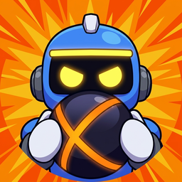

BLITZBREAK · Privacy
Last updated October 15, 2026. This covers the Blitzbreak game on every platform, its online services and this website. In short: you can play offline without sending us anything; playing online creates an account with the name you choose (or your Game Center or Google Play Games name); we don't run ads, sell data, or track you across other apps and sites.
Who we are
Blitzbreak is made by Dylan Clayton ("we", "us"). For anything about your data, email support@playblitzbreak.com.
Playing offline
Matches against bots, the course builder and your settings stay on your device. Your look, name, settings and any courts you build are saved there and never sent to us.
When the main menu opens, the game checks a small file on GitHub to see whether a newer version is out. That request carries nothing about you, but like any web request GitHub receives your IP address (see who else is involved).
Playing online
The first time you play online, the game creates an account for you on our server. There's no email address or password: the account is tied to your device.
What the account holds
- A device ID: a random number the game makes up and saves on your device. It isn't your phone's or computer's hardware ID.
- Game Center (iPhone, iPad and the Mac App Store version): if you're signed in to Game Center, your Game Center player ID for Blitzbreak, so your account follows you to a new device. Apple verifies it; we never see your Apple ID or email.
- Google Play Games (Android): if you're signed in to Play Games, your Play Games player ID for Blitzbreak, for the same reason (from version 0.8.8). Google verifies it; we never see your Google account or email.
- Your display name: your Game Center or Play Games name when you're signed in to one (from version 0.8.8), otherwise the name you pick in Customize. Other players see it in the lobby, on the scoreboard, in the kill feed and in friends lists, so don't use your real name if you'd rather not.
- Your friend code and friends: a code made up for your account, and the friends and friend requests you've made with it (from version 0.8.8).
- Your stats: games played, wins, kills, deaths and goals.
- Match records: for each online match, its result and who played in it (by account ID, not name), with each player's team, kills, deaths and goals.
What else we see
- Your IP address, when the game talks to our server or a match server. We keep it in memory for up to an hour to start match servers close to the players, and don't store it in our database.
- Your look and game version, which match servers need to draw you and check you're compatible.
We use all of this only to run online play: signing you in, finding you a match, starting a server near you, putting you back in a match you left, and keeping your stats.
Everything the game sends to our server and to match servers is encrypted on the way (from version 0.8.0; earlier versions sent match traffic unencrypted).
Playing with friends
In a party (from version 0.8.2), friends join with a code the party's leader shares. The party's members see each other's display names, whether each is ready, and which game each is in (so they can join it), and play together. Our server keeps the party's code and which version it's playing, not who's in it; who's in a party is only held in memory, and the party ends when everyone leaves.
Friends (from version 0.8.8) add each other with their friend codes: a request only becomes a friendship when the other player accepts it, and either of you can remove it, or block someone, at any time. While the game is open, your friends see whether you're on the menu, in a party or in a match, and can invite you to their party; an invite shows their display name. Our server passes these along as they happen and doesn't keep them.
When someone hosts a private game on their own computer, the players who join connect straight to that computer, so the host's computer sees their IP addresses. If the host's router can't share its address automatically, the game asks ipify for the host's public IP address so they can share it.
What we don't do
- No ads, and no advertising or analytics trackers.
- No selling or renting of your data, and no sharing it for advertising.
- No tracking you across other apps or websites.
- No access to your contacts, photos, location, microphone or camera.
- No text or voice chat.
- No purchases in the game today. If that changes, this page will say what's involved first.
Who else is involved
A few companies run the services Blitzbreak relies on. They handle data only to provide those services:
| Company | What it does | What it receives |
|---|---|---|
| DigitalOcean | Hosts our server (New York, USA) | Everything in your online account, stored on our server |
| Edgegap | Runs the match servers, near the players | Players' IP addresses, to pick a location; account IDs, display names and teams for the match; the match's results |
| Apple | Game Center sign-in on iPhone, iPad and Mac (App Store version) | Handled under Apple's privacy policy |
| Google Play Games sign-in on Android | Handled under Google's privacy policy; our server asks Google to confirm your Play Games sign-in and gets your Play Games player ID | |
| GitHub | Hosts this website and the "new version" check | Your IP address, as with any website |
| ipify | Finds a host's public IP address for private games | The host's IP address |
The stores you download Blitzbreak from (the App Store, Google Play, Steam, Epic) have their own privacy policies for their accounts and downloads.
Our account server is in the United States, so if you play from elsewhere your account is stored there. Match servers run in whichever region is closest to the players in the match.
How long we keep it
- Your account, stats and friends: until you delete them (or, for a friend, until either of you removes the other).
- IP addresses: up to an hour, in memory.
- The details needed to rejoin a match you left: until the match ends.
- Server logs: kept for a limited time, then overwritten. They can include display names, account IDs and match results, and are only used to fix problems.
- Backups of our database: 14 days.
- Match records: kept to keep match history accurate. When you delete your account, your account ID is removed from them.
Deleting your data
In the game, open Settings > Delete online account. That deletes your account, name, Game Center or Play Games link, friends and stats from our server straight away, removes your account ID from past match records, and clears the online details saved on your device. Copies in our backups are gone within 14 days.
Lost access to your device? Email us with your display name and roughly when you last played, and we'll find and delete the account.
Everything saved only on your device (settings, look, courts) goes when you uninstall the game.
Your rights
Wherever you live, you can ask us what we hold about you, to correct it, to delete it, or for a copy. Email us and we'll answer within 30 days. Depending on where you live (for example the EU, the UK or California), these are also legal rights, and you can complain to your local data protection authority.
Where the law asks for a reason to use your data: we use it to provide the online play you asked for, and to keep the game working and fair.
Children
Blitzbreak isn't directed at children under 13, and we don't knowingly collect data from them. The only things a player shares are a display name they choose and their match stats. If you think a child under 13 has an online account, email us and we'll delete it.
Changes
When this policy changes, we'll update it here and change the date at the top. If a change matters (say, purchases or a new kind of data), we'll also say so in the game's What's new notes.